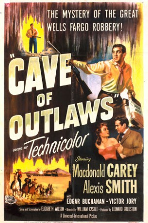

#7515 Die Höhle der Gesetzlosen
Alternativ: Cave of Outlaws
 
 IMDB-Wertung: 5.9 / 10
IMDB-Wertung: 5.9 / 10  Metascore: 0
Metascore: 0 
In 1880s Arizona teenager Pete Carver and a gang rob a train and head for nearby caves to hide the loot.They're followed by the sheriff's posse inside the caves where a gunfight kills everyone except for Pete who surrenders to the sheriff.Despite being beaten Pete refuses to tell where the loot is and he's sent to prison.After his release he returns to the town located nearby the caves.Since the train robbery the caves have become a legend for many who still hope to find the hidden gold.By venturing inside the dangerous caves some even paid with their lives.When Pete arrives in town people know he's back for the loot.They're nice to him offering their goods and services to Pete on credit hoping to share in the loot.One such person is local beauty Elizabeth Trent whose husband disappeared in the caves some time ago while searching for the loot.Another person is Wells Fargo detective Dobbs who's following Pete to retrieve the stolen gold.
Jahr: 1951
Dauer: 75 Minuten
FSK: 12
Land: USA Studio: Universal InternationalTonspuren:
Untertitel: Deutsch,
Auflösung: 1080p (1440x1080) Größe: 5416 MB
Genre: Western
Regisseur: William Castle
Drehbuch: Elizabeth Wilson
Soundtrack:
Darsteller:
- Macdonald Carey als Pete Carver
- Alexis Smith als Elizabeth Trent
 Edgar Buchanan als Dobbs
Edgar Buchanan als Dobbs Victor Jory als Ben Cross
Victor Jory als Ben Cross Hugh O'Brian als Garth
Hugh O'Brian als Garth- Houseley Stevenson als Cooley
 Robert Osterloh als Blackhack
Robert Osterloh als Blackhack Chet Brandenburg als Townsman , uncredited
Chet Brandenburg als Townsman , uncredited Ralph Bucko als Townsman , uncredited
Ralph Bucko als Townsman , uncredited Roy Bucko als Townsman , uncredited
Roy Bucko als Townsman , uncredited Bob Burns als Townsman , uncredited
Bob Burns als Townsman , uncredited Clem Fuller als Henchman , uncredited
Clem Fuller als Henchman , uncredited- Tim Graham als Jones , uncredited
 Charles Horvath als Job Delancey , uncredited
Charles Horvath als Job Delancey , uncredited Jack Ingram als Poker Player , uncredited
Jack Ingram als Poker Player , uncredited Kenneth MacDonald als Poker Player , uncredited
Kenneth MacDonald als Poker Player , uncredited- Frank Matts als Gus , uncredited
 Howard Negley als Warden , uncredited
Howard Negley als Warden , uncredited- Jack O'Shea als Townsman , uncredited
 Russ Tamblyn als Young Peter , uncredited
Russ Tamblyn als Young Peter , uncredited Hugh Sanders als Sheriff
Hugh Sanders als Sheriff- Raymond Bond als Doc
- Johnny Carpenter als Whitey , uncredited
- Victor Cox als Townsman , uncredited
- Robert Filmer als Poker Player , uncredited
- Sydney Mason als Clerk , uncredited
- Tom McDonough als Posse Member , uncredited
- Leo J. McMahon als Posse Member , uncredited
- Jennings Miles als Fugitive , uncredited
- Erik Neilson als Boy , uncredited
 Paul Newlan als McNulty , uncredited
Paul Newlan als McNulty , uncredited- Robert Robinson als Townsman , uncredited
- Bobby Taylor als Boy , uncredited
- George Taylor als Townsman , uncredited
- James Van Horn als Jed Delancey , uncredited
Datei: X:\HD-Western-1900-1959\Höhle der Gesetzlosen, Die (1951, FSK12, 1440x1080).mkv seit 15.11.2017
Festplatte: HD Eastern+Western
 Es gibt insgesamt 98 Filme in der Gruppe 'HD-Western-1900-1959'
Es gibt insgesamt 98 Filme in der Gruppe 'HD-Western-1900-1959'